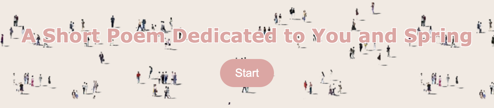
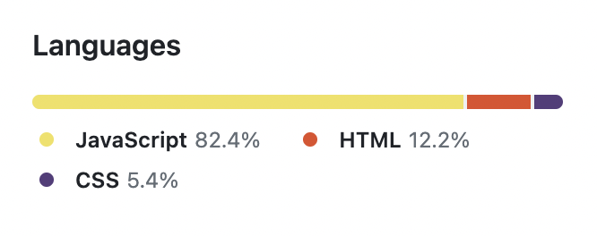

Introduction
This project is an interactive web-based poem divided into 6 sections, each utilizing a different form of interaction. For instance, facial recognition, expression estimation, gesture recognition, and mouse-click interaction are used in this project.
Concept and Background Research
Inspired by the interactive website Nomadic Tribe created by the interactive web studio makemepulse (https://2019.makemepulse.com/), this project presents a poem in an interactive way. Growing up in southern China, I was surrounded by evergreen trees and blooming flowers all year round due to the subtropical monsoon climate. However, living in the UK for the first time made me appreciate the changing seasons, where the trees lose their leaves in autumn and winter, and the springtime revival of flowers and trees left a deep impression on me. This inspired me to write a short poem about spring.
The idea of presenting poetry interactively excites me. As a reader, I find poetry collections the most challenging literary genre to read. Unlike novels or essays, poetry seems to be slices of emotions or thoughts, making it difficult to capture my attention. I hope to enhance the readability of poetry through interaction and make the viewer's presence a part of the narrative, creating a unique literary experience together.
This project aims to attract more young people to engage in poetry reading and writing through innovative means. By combining poetry and interactive elements, we hope to bring new perspectives and vitality to this art form.
Technical Implementation
This project mainly consists of three programming languages: HTML, CSS, and JavaScript. The HTML language is used to define the framework of the entire webpage, while iframe is used as an embedded element. By clicking a button, different p5.js programs are displayed in the iframe. This is achieved through JavaScript, which is responsible for controlling the button click event and dynamically updating the contents of the iframe with different p5.js programs. CSS is used for styling and layout of the webpage, making it visually appealing and easy to navigate. For example, the styling of buttons and the animation of hovering over the mouse in the web page is done in CSS. Also, since Chrome refuses to play audio automatically, the program adds an interaction to the button, specifying in the html that the bgm will only play when the reader clicks the "Start" button.
This project mainly utilizes facial recognition, expression estimation, gesture recognition, and mouse-click interaction. Chapter 1 is the opening animation of the poem, where the size of the ellipse is controlled by the sine function. The color change of the ellipse is achieved through time control. Additionally, the range of text display changes as the mouse moves on the screen, thus improving the readability and attractiveness of the text.
In Chapter 2, some randomly generated flowers controlled by Perlin noise appear at the location of a mouse click. The colors of the flowers are stored in an array and displayed in order. When the reader clicks on the screen, the recitation of the poem chapter will also be played.
Similarly controlled by mouse interaction, Chapter 3 generates a two-dimensional flow field through the variation of Perlin noise and positions each particle at a certain location in the vector field. As the mouse moves across the screen, the color of the particles changes from blue to lime green. At the same time, a pink gradient circle symbolizes the sun in the center of the screen. Randomly appearing white points simulate the reflection of sunlight on water waves.

Chapter 4 utilizes facial expression interaction with the help of the ml5 library faceapi.js. When the webcam detects a smile from the viewer, the screen will show flowers blooming (controlled by frameCount and rotate) and petals floating (controlled by the Petal class which sets the initial position, size, speed, and color of the petals). Similar to Chapter 4, Chapter 6 serves as the ending animation of the poem. When the default algorithm of faceapi.js, the Tiny Face Detector, captures a face through the webcam, petals fall and a voiceover wishing the viewer a happy spring play.
The sketch in Chapter5 was adapted from my Week 9 assignment. The section uses the hand recognition algorithm from ml5.js to draw curves based on the position of the fingertips and determine if the fingers are pinched together based on the distance and play music when the fingers are pinched together.
Reflection and Future Development
The design of using fixed-position buttons to navigate between different chapters in this project still feels a bit rigid. In the future, I can learn from makemepulse's design and integrate the buttons into the visuals, making them part of the narrative.
Also, the hand recognition algorithm in ml5.js seems to be unable to recognize both hands at the same time. However, MediaPipe can achieve this and its capture of different angle nodes is also more accurate. I have tried to use MediaPipe, but encountered technical issues when integrating it with p5js. If I have time in the future, I will continue to explore the possibility of using MediaPipe in Chapter 5 to replace ml5.js.